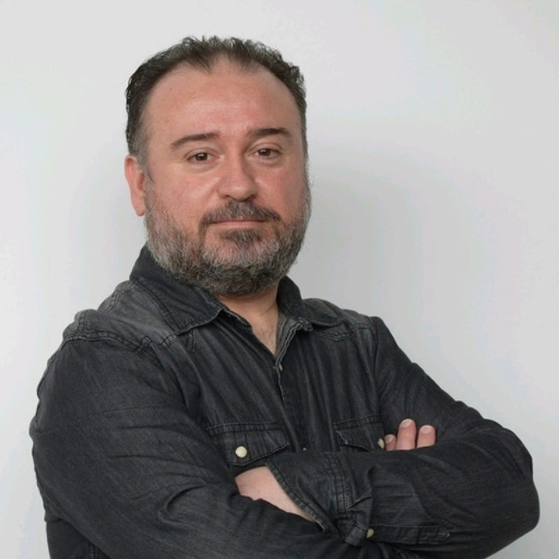

public class JoseFranciscoHernandezCV {
public String nombre = "Jose Francisco Hernandez";
public String fechaNacimiento = "08/08/1977";
public String lugarNacimiento = "Valencia";
public String estadoCivil = "Casado";
public boolean vehiculoPropio = true;
public String email = "jhernandez.laboral[@]gmail.com";
public String telefono = "+34.*** ** ** **";
public String linkedin = "https://www.linkedin.com/in/aiotdeveloper";
private final String perfilProfesional = """
Ingeniero informatico con mas de 20 anios de experiencia.
Disenio de sistemas IoT seguros y escalables.
Enfoque en ciberseguridad de dispositivos.
""";
public void ExperienciaLaboral() {
}
public enum HardSkills {
SISTEMAS_EMBEBIDOS, IOT, FIRMWARE,
EMBEDDED_LINUX, FREE_RTOS,
CSHARP, VCPLUSPLUS, CPLUSPLUS, JAVA, PYTHON, BASH, KOTLIN, SQL,
TERRAFORM, VAGRANT, ANSIBLE, DOCKER, JENKINS,
ARQUITECTURA_MICROSERVICIOS, QUARKUS, KAFKA, MQTT, MYSQL, MONGO
}
public enum SoftSkills {
LIDERAZGO, COMUNICACION, PENSAMIENTO_ESTRATEGICO, TRABAJO_EN_EQUIPO
}
public void Educacion() {
}
public void Publicaciones() {
}
public void ActividadInvestigadora() {
}
public String intereses = """
Desarrollo de software y firmware.
Ciberseguridad. Autodidacta y entusiasta de la tecnologia.
""";
public String idiomas = "Espanol (nativo), Ingles (intermedio)";
}